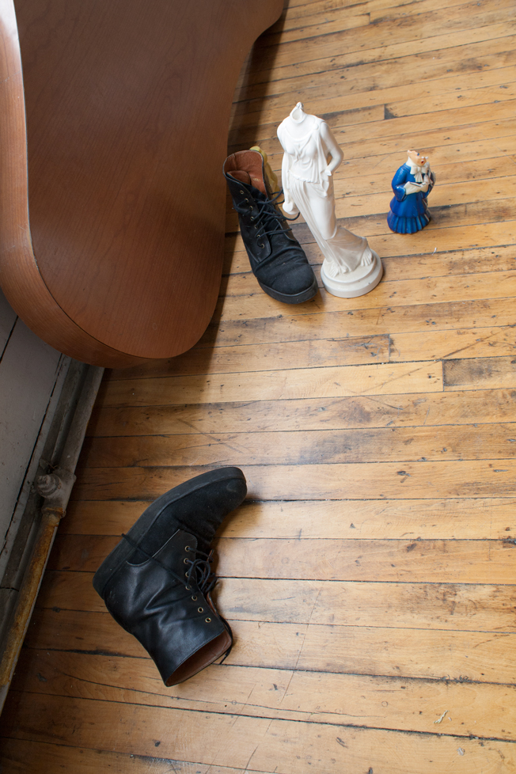
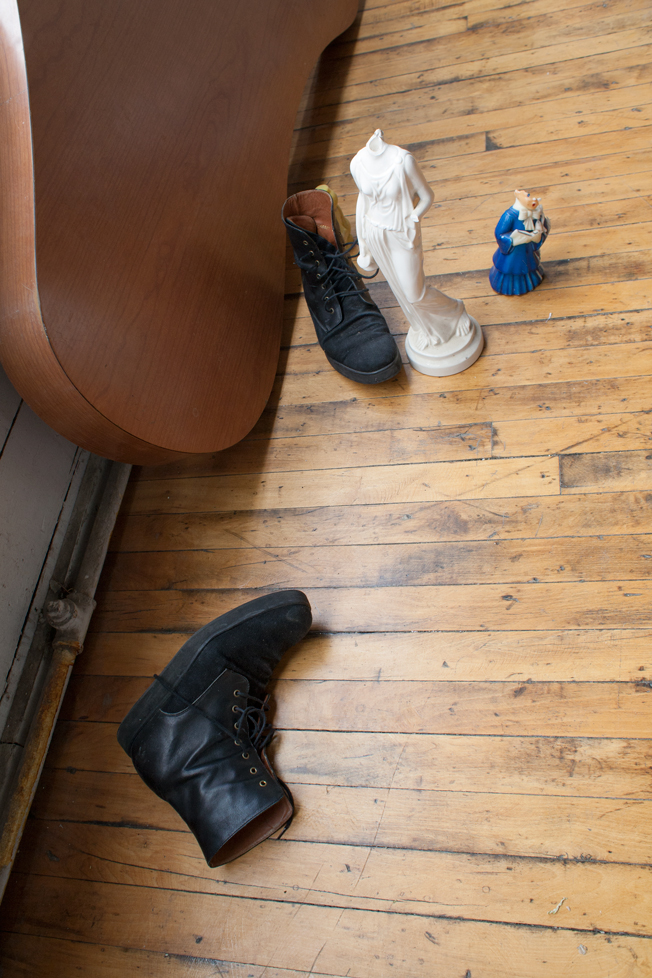
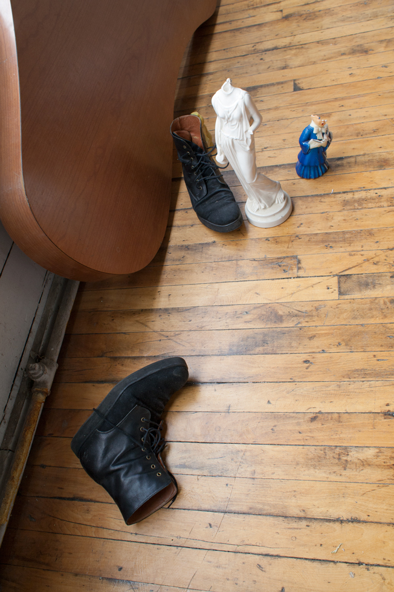

All images appear courtesy Erika Jacobs
When writing about the photographs of Paul Strand, John Berger remarked that “His best photographs are unusually dense — not in the sense of being overburdened or obscure, but in the sense of being filled with an unusual amount of substance per square inch.” There is a similar density in the practice of Georgia Dickie. Working primarily with found material, she creates sculptures that are tributes to impermanence and flux. Rather than create monuments, she constructs objects that reflect the lived experience. Ordinary wear and tear function much like physical scars, hinting at previous experiences and the passage of time. Inspired by these patterns of circulation and use, we enlisted Toronto based photographer Erika Jacobs to photograph Georgia as she moved studios.

All images appear courtesy Erika Jacobs